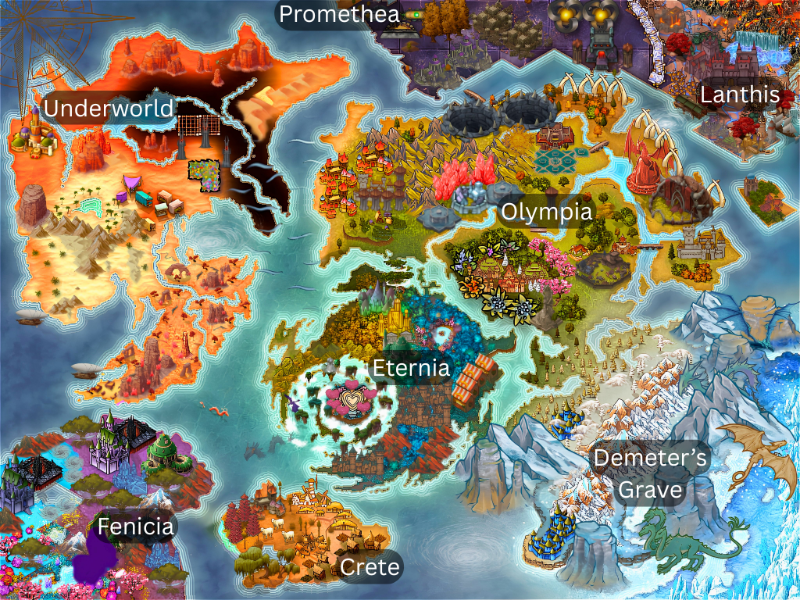

✧Astraea's map is being preparedThe region directory remains usable. Upload assets/astraea.png to reveal the original campaign map.
Beyond the surface
Unmapped destinations
Known places without reliable map coordinates
Select a marker or a place from the directoryApproximate label markers; not official borders